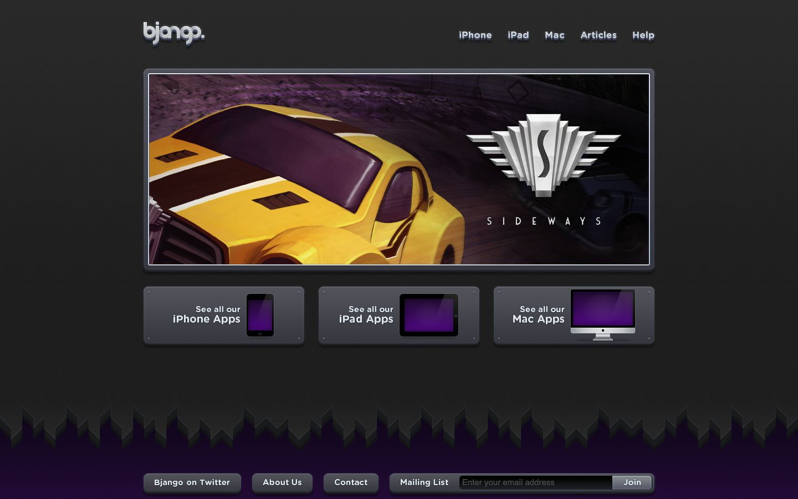

References / Website / 124
Bjango website, 2011
The app studio Bjango’s home page, archived June 2011: dark gray plates held by small screws, with beveled buttons and embossed labels.
- Source
- bjango.com (archived copy)
- Creator
- Bjango
- Made
- 2011
- Style
- Skeuomorphism (agent-proposed, not yet reviewed by a person)
- Moods
- Dark, machined, polished
- Evidence
- Captured from the Internet Archive with
tools/capture.mjs(headless Chrome, 1440 × 900) on 28 September 2026 and inspected. The archived page may lack some images or scripts that the live page had. - Reviewed
- Rights
- Third-party work, stored with credit for commentary. License: unverified. Rights policy
Observed
- The page is dark charcoal. A large framed banner and three smaller plates sit on it with soft drop shadows.
- Each gray plate has a small dot like a screw head at each corner and a light top edge.
- Navigation words (iPhone, iPad, Mac, Articles, Help) are light gray with a dark shadow, as if embossed.
- The footer buttons are rounded rectangles with a vertical gradient; the email field is recessed into a darker well with a Join button at its end.
- A band of dark jagged shapes above a purple footer suggests a mountain silhouette.
Why it belongs
No CSS surface was measured: the page has 0 styled boxes in the viewport and 100% image share, so every bevel and shadow is a bitmap. The measurement sees none of the texture, because the page draws it with bitmap background images; see the style synthesis.
Borrow
Put a small screw head in each corner of a panel to make it read as a mounted plate.
Recess a single email field into a darker well with the button attached to its end.
Measured
Machine-extracted by tools/extract-traits.js on . Full measurement.
- Type families
- Helvetica (100%)
- Median radius
- null px
- Mean chroma
- 0.27
- Palette
- #51405f 82%
- #0000ee 18%

